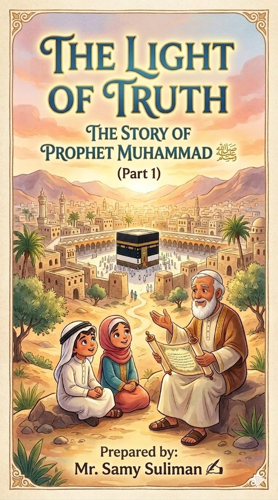

The Light of Truth — Part 1
السيرة النبوية للأطفال بأسلوب قصصي وأنشطة تعليمية مناسبة للمدارس الدولية.
A children’s Seerah book combining storytelling with activities for international school learners.
مطبوعPrintedمعلم تربية إسلامية | مدرب معلمين | مؤلف تربوي
Islamic Studies Teacher | Teacher Trainer | Educational Author
نبني العقول... ونرعى الشخصية... ونترك أثرًا يبقى.
Inspiring minds. Shaping character. Creating lasting impact.
خبرة تمتد لأكثر من 20 عامًا في التعليم، تشمل تدريس التربية الإسلامية، ورئاسة قسم الدراسات الإسلامية، وتدريب المعلمين، وتأليف المواد التعليمية، والمساهمة في الجودة والاعتماد الأكاديمي.
More than 20 years of experience in Islamic Studies teaching, department leadership, teacher development, educational publishing, and quality and accreditation support.

خبرة تعليمية ممتدة، وأثر موثق، وقدرة على الجمع بين التدريس، وتطوير المعلمين، وإنتاج المحتوى التعليمي، والعمل المؤسسي.
Long educational experience, documented student impact, and the ability to combine teaching, teacher development, educational publishing, and institutional contribution.
أكثر من عشرين عامًا في تدريس التربية الإسلامية والعمل داخل بيئات تعليمية متنوعة.
More than twenty years in Islamic Studies teaching across diverse educational environments.
شهادات طلابية وفيديوهات حقيقية تعكس أثرًا يتجاوز حدود الحصة الدراسية.
Authentic student voices and videos showing impact beyond the classroom.
خبرة سابقة في تنسيق قسم الدراسات الإسلامية ودعم الزملاء وتحقيق الأهداف المشتركة.
Previous experience coordinating the Islamic Studies department and supporting colleagues.
تقديم ورش عملية وتبادل خبرات في التخطيط، والتقويم، وإدارة الصف، وطرائق التدريس.
Practical workshops and knowledge sharing in planning, assessment, classroom management, and teaching methods.
مؤلفات مطبوعة وسلاسل تعليمية للأطفال والكبار ومواد تخدم المعلم والطالب.
Printed books, educational series for children and adults, and resources for teachers and students.
المشاركة في الجودة والاعتماد الأكاديمي والعمل بروح الفريق داخل المؤسسة التعليمية.
Contribution to quality, accreditation, and team-based school improvement.
خبرة تجمع بين التعليم الأزهري، والمدارس العالمية، ورئاسة القسم، وتطوير المعلمين والمحتوى.
A career combining Al-Azhar education, international schools, department leadership, teacher development, and educational content.
معلم تربية إسلامية، ورئيس قسم سابق، ومشارك في تدريب المعلمين والجودة والاعتماد الأكاديمي.
Islamic Studies teacher, former Head of Department, and contributor to teacher training, quality, and accreditation.
تدريس العلوم الشرعية والقرآن الكريم، وبناء خبرة راسخة في التعليم والتوجيه التربوي.
Teaching Islamic sciences and the Qur’an, building a strong foundation in education and student guidance.
تقديم ورش للمعلمين، وتأليف كتب ومواد تعليمية، والمشاركة في مبادرات تربوية ومجتمعية.
Delivering teacher workshops, authoring books and educational resources, and contributing to educational and community initiatives.
قد تتحدث الشهادات عن الخبرة، لكن كلمات الطلاب تكشف الأثر. لذلك جعلنا شهادة فيصل أول فيديو في الموقع.
Certificates describe experience, but students reveal impact. That is why Faisal’s testimony is the first featured video.
مشروعات تأليفية تخاطب الطفل، والقارئ البالغ، ومعلم القرآن؛ وتعرض بوضوح ما اكتمل وما يزال قيد الإعداد.
Publishing projects for children, adult readers, and Qur’an educators, clearly distinguishing completed work from projects in development.

السيرة النبوية للأطفال بأسلوب قصصي وأنشطة تعليمية مناسبة للمدارس الدولية.
A children’s Seerah book combining storytelling with activities for international school learners.
مطبوعPrinted
استكمال رحلة السيرة النبوية للأطفال ضمن السلسلة التعليمية.
The next stage of the children’s educational Seerah journey.
تحت المراجعةUnder Review
الجزء الثالث من السلسلة الموجهة للأطفال والناشئة.
The third installment for children and young learners.
تحت المراجعةUnder Review
البدايات والسنوات الأولى في صياغة موجهة للقارئ البالغ وطلاب العلم.
The early years, written for adult readers, educators, and students of knowledge.
مطبوعPrinted
مرحلة الدعوة المكية ضمن مشروع السيرة الموجه للكبار.
The Meccan mission within the adult Seerah publishing project.
تحت المراجعةUnder Review
العهد المدني واستكمال السلسلة العلمية والتربوية.
The Medina era, completing the educational adult series.
تحت المراجعةUnder Review
كتاب كامل يجمع أحكام القراءة والإقراء في مرجع عملي، مع توجه مستقبلي لتطويره إلى مستويات تعليمية منفصلة. ويُعرض في الموقع حاليًا بوصفه كتابًا واحدًا مكتملًا.
A complete practical reference on Qur’anic reading and instruction. It is currently presented as one completed volume, while future educational restructuring remains a later development.
أقسام منظمة تعرض الخبرة والأثر والمبادرات والوثائق الداعمة.
Organized sections presenting experience, impact, initiatives, and supporting evidence.
أرحب بفرص تدريس التربية الإسلامية، ورئاسة الأقسام، وتدريب المعلمين، وتطوير المحتوى التعليمي.
I welcome opportunities in Islamic Studies teaching, department leadership, teacher training, and educational content development.